Painting a World in seconds
The biome map is a small PNG image — a few hundred pixels wide. Yellow pixels become Plains. Green becomes Forest. Red becomes Mountain. Blue becomes Water. I painted it in a pixel editor in about a minute. The engine reads it directly, and one pixel becomes one tile in the world.
The appeal of this over procedural generation: I can hand-sculpt the world's shape. I know where I want the water, where I want mountains to create natural borders, where I want open plains for foragers to roam. The simulation handles everything else — but the world's geography is intentional. Changing the world is as simple as repainting a few pixels and pressing a button in the editor.
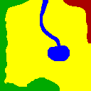
This is the actual file — a few hundred pixels, four flat colors, painted free-hand in a couple minutes. The lake and its river are just a blob and a squiggle; forest hugs two edges for cover, and a corner of mountain sits top-right as a natural border. Nothing here was generated.
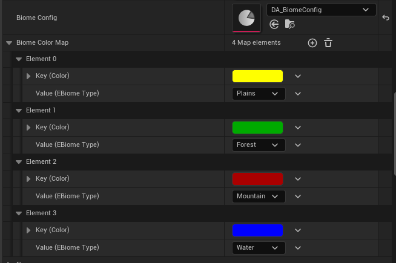
This map lives on the DA_BiomeConfig data asset and is the exact lookup table the texture parser checks pixel-by-pixel. Yellow resolves to Plains, green to Forest, red to Mountain, blue to Water. Add an entry, and a fifth color is a new biome — no code change.
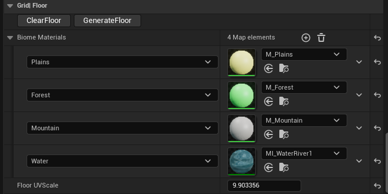
A second, independent map on the grid actor — one material per biome, assigned by name. Swapping MI_WaterRiver1 for a different water material changes every lake and river in the world at once, since they're all reading from the same table.
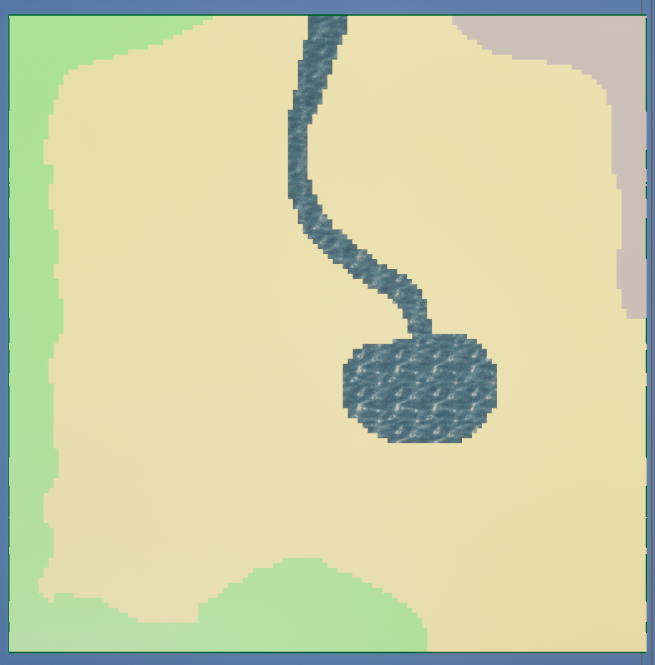
Same lake, same river, same corner of mountain — now a textured floor mesh, built from the same PNG in the same button press. Line this up against the source image above: the geometry and the color choices both trace back to that one small file.
How the texture parsing works
The ASimWorldGrid actor holds a reference to a UTexture2D. The texture must use CompressionSettings = TC_UserInterface2D and MipGenSettings = NoMipmaps — this preserves exact pixel values without compression or mip blending.
At generation time, the actor locks the texture's bulk data and reads each pixel as an FColor (BGRA). A configurable TMap<FColor, EBiomeType> maps pixel colors to biome types — this lives in the Details panel so any designer can remap colors without touching code. Alpha is normalized to 255 before the lookup so the source image's alpha channel doesn't matter.
// Lock read-only, iterate pixels const FColor* Pixels = static_cast<const FColor*>(Mip.BulkData.LockReadOnly()); for (int32 y = 0; y < GridHeight; ++y) { for (int32 x = 0; x < GridWidth; ++x) { FColor Pixel = Pixels[y * GridWidth + x]; Pixel.A = 255; // normalize alpha const EBiomeType* Found = BiomeColorMap.Find(Pixel); Tiles[y * GridWidth + x].Biome = Found ? *Found : EBiomeType::Plains; } } Mip.BulkData.Unlock();
Grid width and height come directly from the texture's mip dimensions — so the image size defines the world size, with no separate configuration needed.
Connected Regions: Each Lake Is Its Own Actor
After the image is parsed into a tile array, a flood fill algorithm runs across it. It finds every connected group of same-biome tiles — "connected" meaning touching on four sides, not diagonally — and treats each group as a single region.
A lake isn't just a collection of blue pixels. It becomes a Region actor placed at the centroid of its tiles. So does each forest, each mountain range. Each region knows its tile count, derives a resource cap proportional to its size, spawns resource nodes (berries in plains, timber in forests, ore in mountains), and manages a regeneration timer. When a resource depletes, the region notices and regrows one after a configurable interval. The game mode doesn't micromanage any of this — the regions run themselves.
Water regions do something else: at runtime, they register a navigation obstacle covering their tile footprint, so unit pathfinding treats water as impassable. No movement code changes — the world wires itself up.
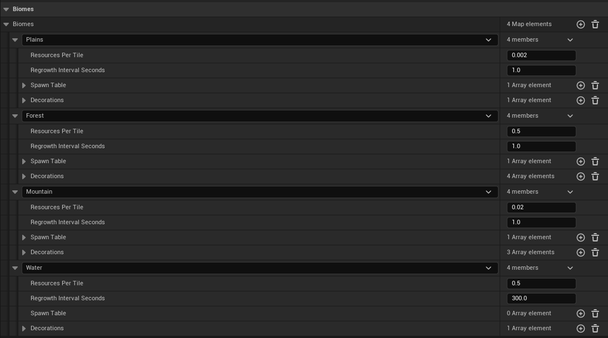
Each biome gets its own entry here: how densely resources spawn per tile, how long regrowth takes, and its own spawn and decoration tables. Water's regrowth interval is set to 300 seconds against 1.0 for the rest — its "resource" is really the occasional fish node, not something that needs to come back quickly.
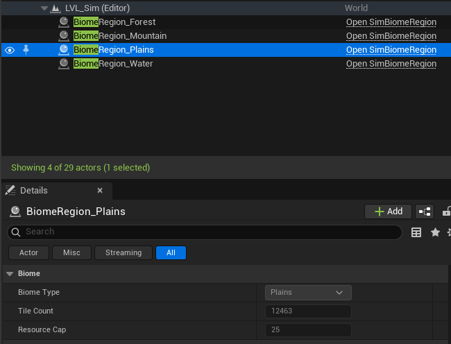
This is what the flood fill actually produces — real actors in the World Outliner, one per connected region, created the moment the world generates. BiomeRegion_Plains's own details panel shows exactly what it knows about itself: its biome type, and the stats it derives from its own tile footprint.
Flood fill + region lifecycle
The flood fill is a standard iterative DFS using an explicit stack — no recursion to avoid stack overflows on large grids. Each tile is visited once. Connected same-biome tiles accumulate into a list, then get handed to SpawnRegion().
// Iterative DFS flood fill TArray<bool> Visited; Visited.SetNumZeroed(Tiles.Num()); for (int32 StartIdx = 0; StartIdx < Tiles.Num(); ++StartIdx) { if (Visited[StartIdx]) continue; EBiomeType BiomeType = Tiles[StartIdx].Biome; TArray<FIntPoint> RegionTiles; TArray<int32> Stack; Stack.Add(StartIdx); Visited[StartIdx] = true; while (Stack.Num() > 0) { const FIntPoint Tile = IndexToTile(Stack.Pop()); RegionTiles.Add(Tile); // check 4 neighbors, push unvisited same-biome tiles } SpawnRegion(BiomeType, RegionTiles); }
Each ASimBiomeRegion receives its tile list and resource cap (= TileCount × ResourcesPerTile, configurable per biome in a data asset). Water regions set up a hidden UBoxComponent sized to their tile footprint with a UNavModifierComponent set to NavArea_Null. This is why water blocking works without any special code in the movement system: the NavMesh simply has no traversable surface over water tiles.
Materials That Don't Show the Grid
The first version of the floor used vertex colors — each tile colored by its biome type. It was fast to implement and immediately obvious it was wrong. Water looked like hundreds of individual puddles.
The fix was two things working together. First: instead of one mesh section with all tiles sharing a material, the floor is split into one section per biome type. Each section gets its own material — a water material, a grass material, a rock material. You can author those however you like in the editor.
Second: world-space UV coordinates. With per-tile UVs (0→1 per tile), the material texture restarts at every tile boundary, which is what makes the grid visible. With world-space UVs, coordinates are derived from the vertex's actual position divided by a configurable scale. The UVs flow continuously across the entire region. A water material now samples coordinates as if the ocean is one surface. No tile edges appear in the output. A single FloorUVScale parameter on the grid actor controls how large the texture appears relative to the tiles.
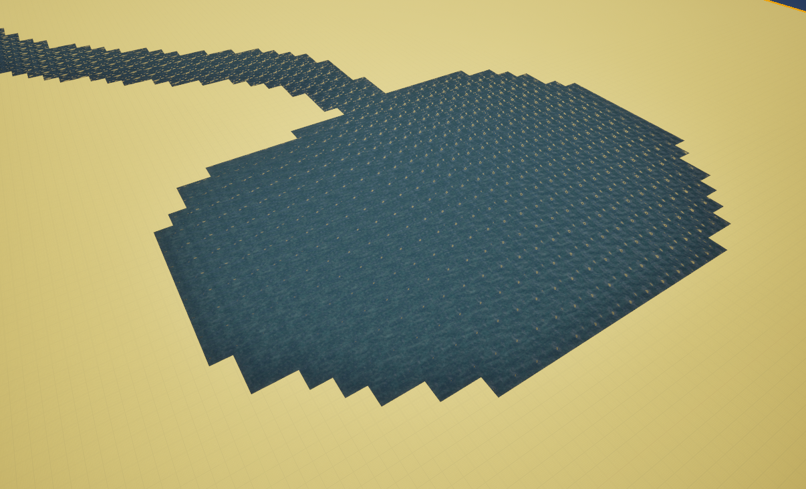
Every tile samples the same 0→1 texture range, so the water material repeats identically on every single tile. The pattern lines up perfectly at every seam — which is exactly the problem. That perfect repetition is what reads as a grid.
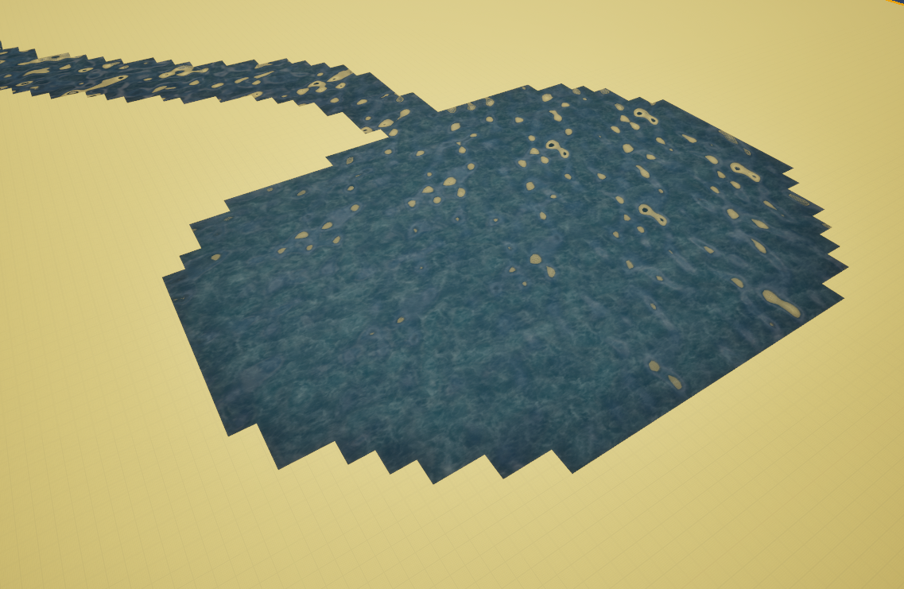
Same lake, same material, coordinates derived from world position instead of per-tile. The ripples and foam patches now span multiple tiles at irregular sizes, because the texture is being sampled as one continuous surface rather than restarted at every boundary.
UV math and mesh section per biome
During GenerateFloor(), tiles are grouped by biome type into a TMap<EBiomeType, TArray<int32>>. Each group becomes one CreateMeshSection call on the UProceduralMeshComponent, and each section gets its material assigned via SetMaterial(SectionIndex, BiomeMaterials[Biome]).
The UV for each vertex corner is just the vertex's local-space X/Y position divided by a scale divisor:
const float UVDivisor = TileSize * FloorUVScale; // e.g. 1500 × 4.0 = 6000 // For tile at grid position (x, y): const float L = x * TileSize; const float R = (x + 1) * TileSize; const float B = y * TileSize; const float T = (y + 1) * TileSize; UVs.Add(FVector2D(L / UVDivisor, B / UVDivisor)); UVs.Add(FVector2D(R / UVDivisor, B / UVDivisor)); UVs.Add(FVector2D(R / UVDivisor, T / UVDivisor)); UVs.Add(FVector2D(L / UVDivisor, T / UVDivisor));
Because adjacent tiles share the same formula, the UV at the right edge of tile N equals the UV at the left edge of tile N+1. No discontinuity, no seam.
One note on NavMesh: UProceduralMeshComponent only creates complex (per-triangle) collision, which NavMesh recast ignores — it only queries simple collision shapes. The floor includes a hidden UBoxComponent spanning the full grid to give the NavMesh something to project onto.
Filling the World
Materials make the biomes readable. Decorations make them feel real. Each biome type has a configurable decoration table — a list of meshes or Blueprint actors, each with a density (probability per tile), scale variance, random yaw, and position jitter. The world grid iterates every tile at generation time and rolls against each entry.
Static mesh decorations — trees, rocks, grass clumps — use GPU instancing: one draw call per unique mesh regardless of how many instances exist. A dense forest with thousands of trees costs the same as a handful. Blueprint actor decorations are spawned individually for cases where something needs logic or animation.
One checkbox per decoration entry controls whether instances generate collision. Trees and boulders block movement; grass and flowers don't. This keeps physics overhead minimal without needing separate mesh variants.
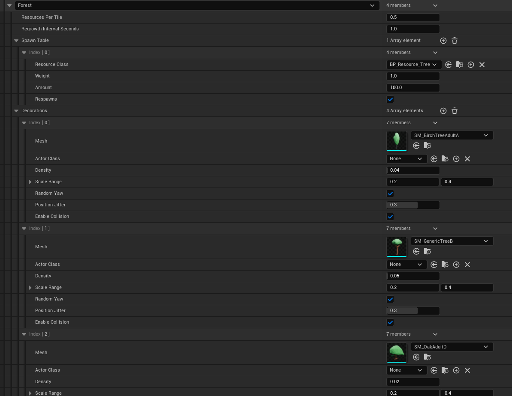
This is the table that drives everything below — one entry per mesh or Blueprint actor, each with its own density, scale range, random yaw, position jitter, and collision toggle. Forest alone has four of these; a birch and a generic tree at low density, plus entries for whatever else fills out the canopy.
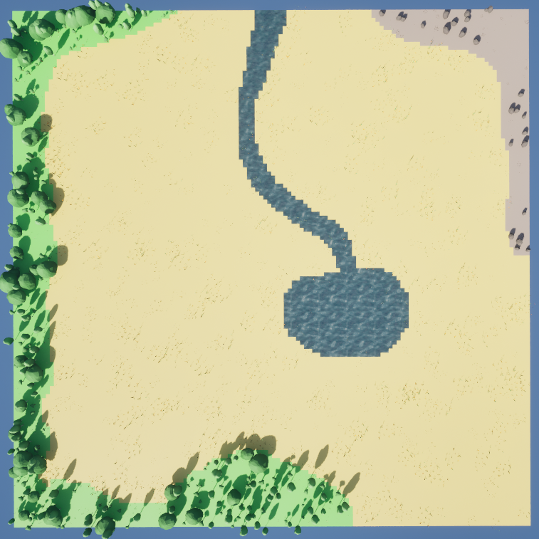
Top-down, the same map from the World Authoring section — trees along the forest border, rocks across the mountain corner, the lake and river left alone since water's table is mostly empty. Each biome only ever spawns from its own table.
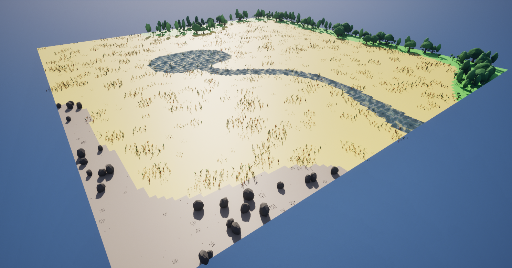
Closer in, the plains aren't empty either — a low-density grass entry gives the open ground some texture without competing visually with the forest and mountain edges framing it.
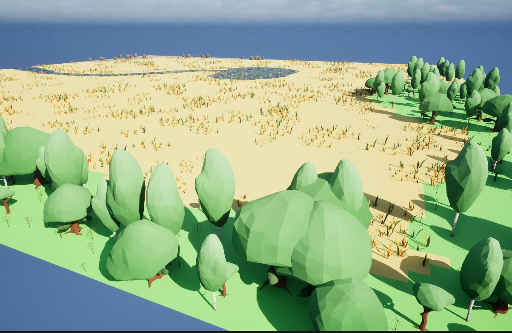
And from ground level inside the tree line: the density and scale range settings from the table above are what turn a flat border into something that reads as an actual forest edge rather than a row of identical props.
GPU instancing and the ISM cache
Each unique static mesh asset gets exactly one UInstancedStaticMeshComponent (ISM), created on demand and stored as a component on the grid actor — not as a separate world actor. This keeps the World Outliner clean.
The cache is keyed on (UStaticMesh*, bool bCollision) — two separate maps, one for collision-enabled instances and one without. The same mesh can appear in multiple biome tables with different collision settings and still get separate ISM components:
// Two caches: one per collision setting TMap<UStaticMesh*, UInstancedStaticMeshComponent*> ISMCacheNoCollision; TMap<UStaticMesh*, UInstancedStaticMeshComponent*> ISMCacheCollision; auto GetOrCreateISM = [&](UStaticMesh* Mesh, bool bCollision) { auto& Cache = bCollision ? ISMCacheCollision : ISMCacheNoCollision; auto& ISM = Cache.FindOrAdd(Mesh); if (!ISM) { ISM = NewObject<UInstancedStaticMeshComponent>(this); ISM->SetStaticMesh(Mesh); ISM->SetCollisionEnabled(bCollision ? ECollisionEnabled::QueryAndPhysics : ECollisionEnabled::NoCollision); ISM->RegisterComponent(); ISM->AttachToComponent(RootComponent, ...); DecorationISMs.Add(ISM); } return ISM; };
Blueprint actor decorations are spawned via SpawnActor and tracked in a separate DecorationActors array. Both are destroyed by ClearDecorations(), which is always called before ClearGenerated().
Putting People In It
The world exists. The next milestone is the survival loop: hunger, energy, health. Units that forage, sleep, rest, and die if left long enough without food. The decision system is a utility AI — every possible action gets a float score based on current stats and personality traits, and the highest scorer wins. Two units with identical hunger but different personalities will make different choices. That difference, repeated across 30 units over hours of simulation time, is where emergence starts to happen.